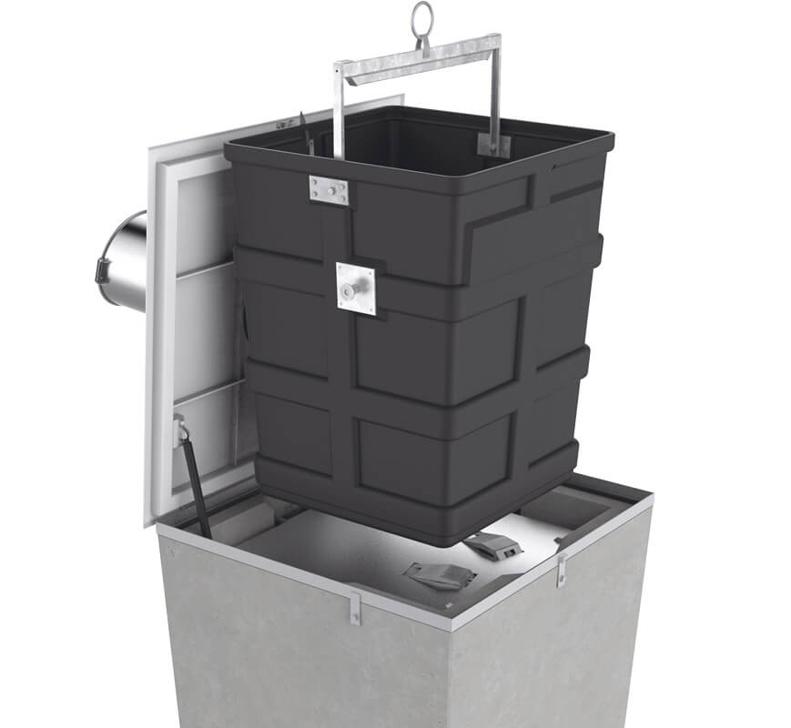
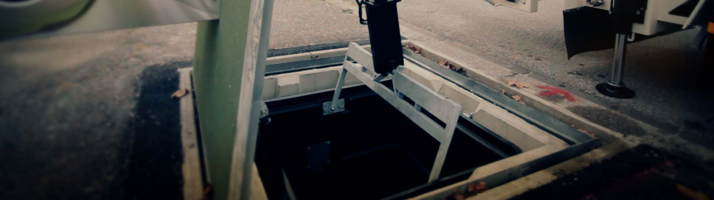
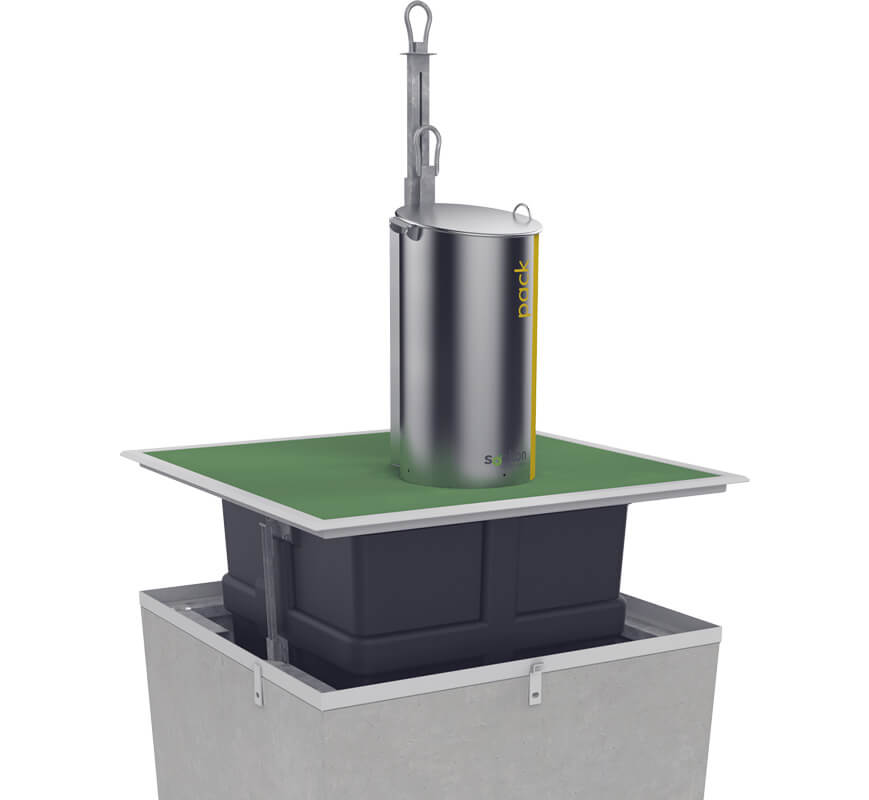
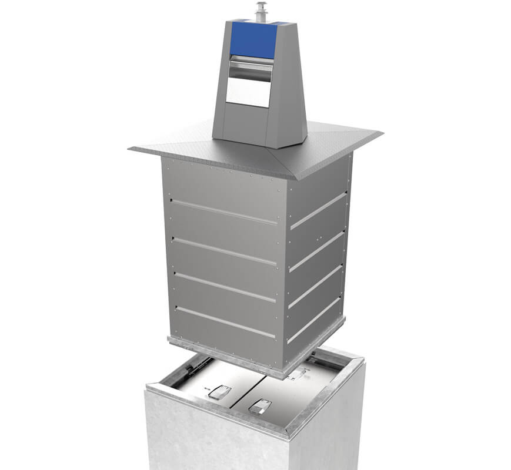
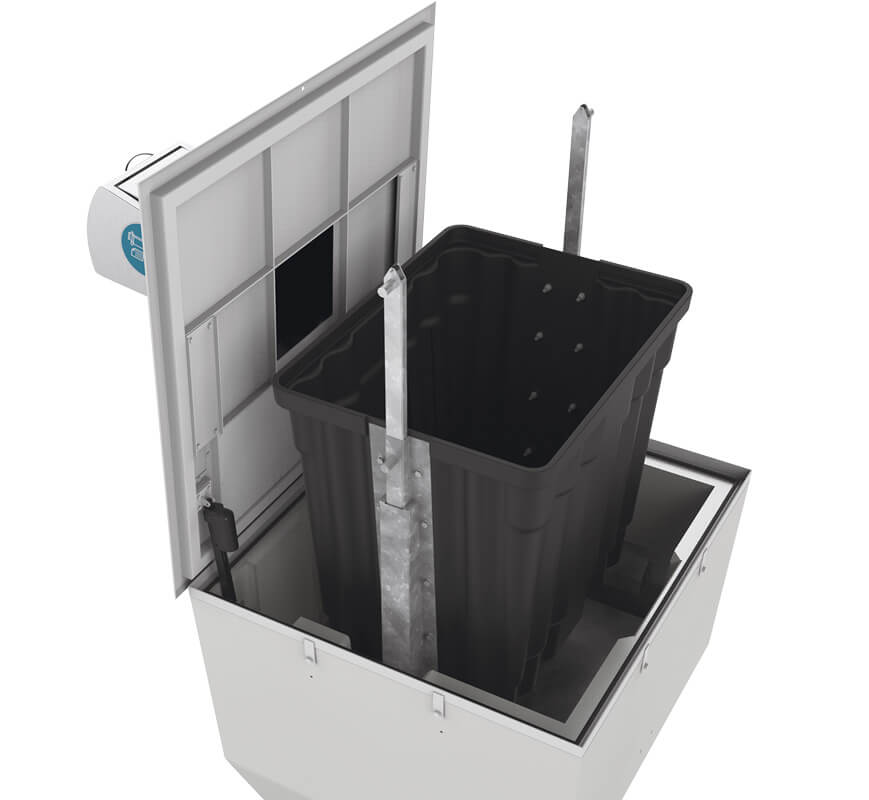
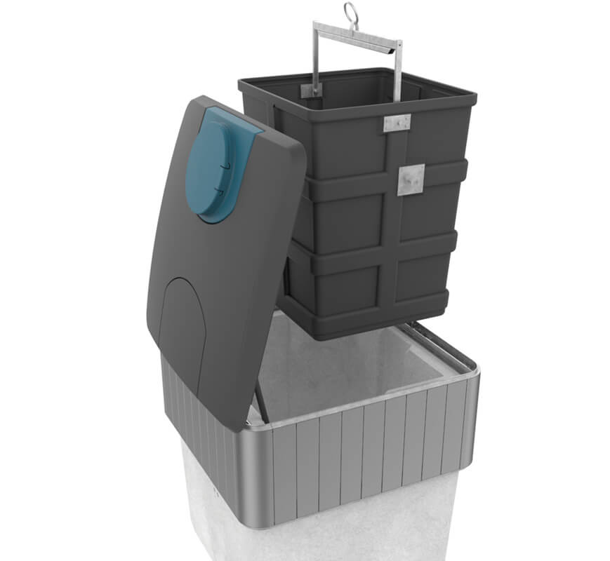
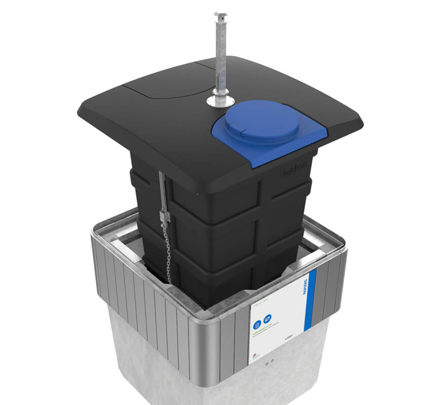
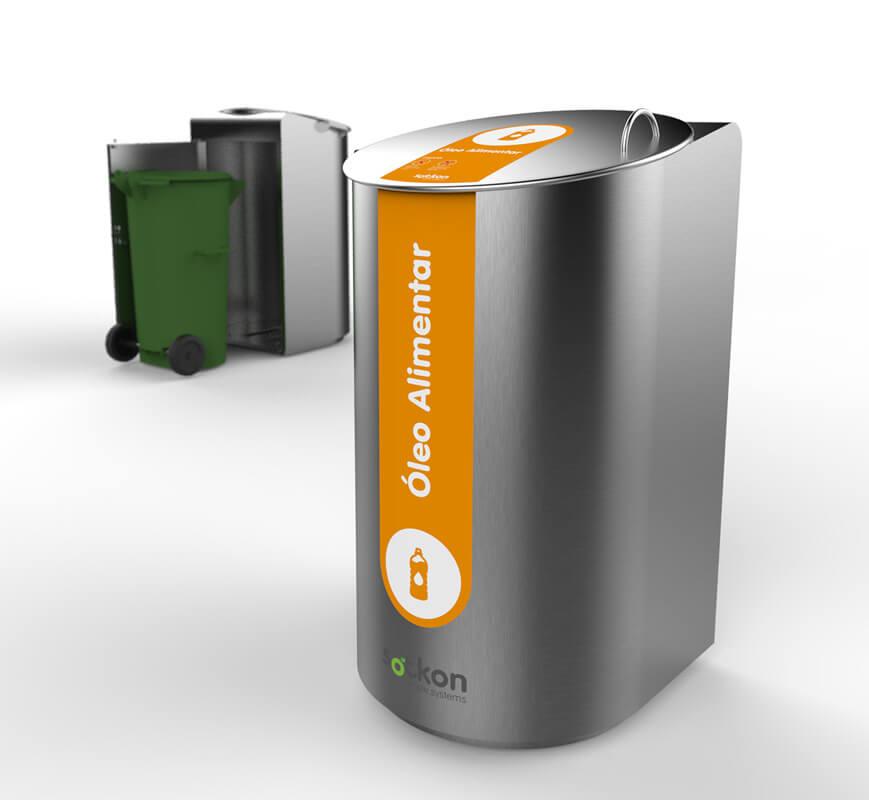

Underground Waste Systems
Koncept
This is Sotkon's star product: a patented high-capacity underground waste storage system designed for efficient collection and simple operation.
Know more
Complete modular equipment, delivered pre-assembled and ready to install. Underground, semi-underground and surface systems share the same Sotkon logic: simple, efficient and adaptable.
Waste systems
Remembering Sotkon's values, the product family joins simplicity and efficiency with the adaptability needed for each customer, market and public-space condition.

This is Sotkon's star product: a patented high-capacity underground waste storage system designed for efficient collection and simple operation.
Know more
A compact and robust underground waste system with high storage capacity, where all equipment components move together during collection.
Know more
Sotkon's underground metal solution for top-loading collection vehicles, using a container with high mechanical strength.
Know more
A side-loading collection solution based on simplicity of operation and installation.
Know more
A semi-underground system applying Koncept principles where full underground placement is constrained.
Know more
The adaptation of the Evos waste disposal system to a semi-underground solution.
Know more
A surface collection solution designed to receive used cooking oil bottles.
Know more
A practical surface solution for organic waste, used cooking oil or other specific waste streams.
Know more